CÓDIGO
MORSE
COMUNICAÇÃO QUE ATRAVESSOU O TEMPO.
Explore o código que conectou o mundo antes das palavras digitais. Aprenda, traduza e descubra sua história.
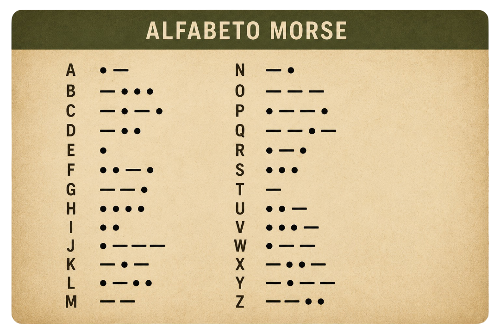
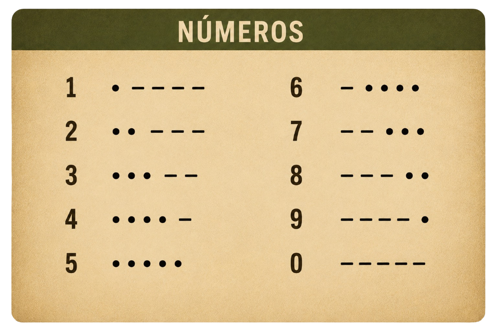
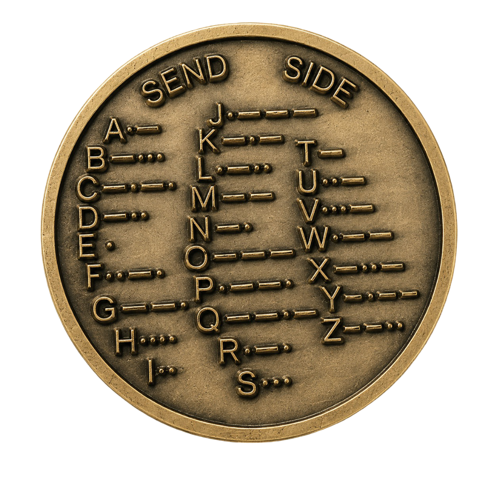
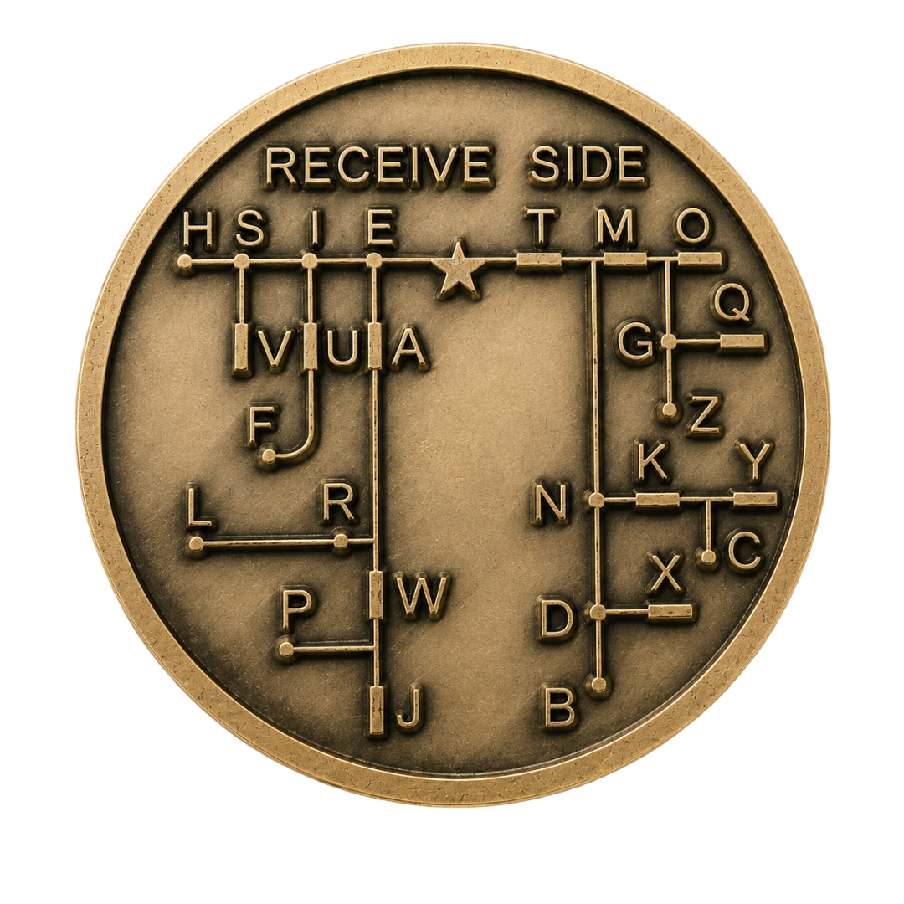
Explore o código que conectou o mundo antes das palavras digitais. Aprenda, traduza e descubra sua história.




O Código Morse representa letras, números e pontuação através de sequências de pontos (·) e traços (–). Qualquer pessoa pode aprender — basta prática.
O ponto é o sinal mais curto. Na transmissão sonora, dura 1 unidade de tempo. Representa o início de muitos caracteres como a letra E.
O traço é 3× mais longo que o ponto. A letra T é apenas um traço. Combinado com pontos, forma todo o alfabeto.
Entre letras há uma pausa de 3 unidades. Entre palavras, 7 unidades. O ritmo dos intervalos é tão importante quanto os sinais.
Converta texto em Código Morse e vice-versa. Digite no campo abaixo e a tradução acontece em tempo real.
Clique em qualquer célula para ouvir o som do caractere em Código Morse.
Samuel Finley Breese Morse nasce em Charlestown, Massachusetts. Filho de pastor calvinista, crescerá para se tornar pintor renomado — antes de mudar a história da comunicação.
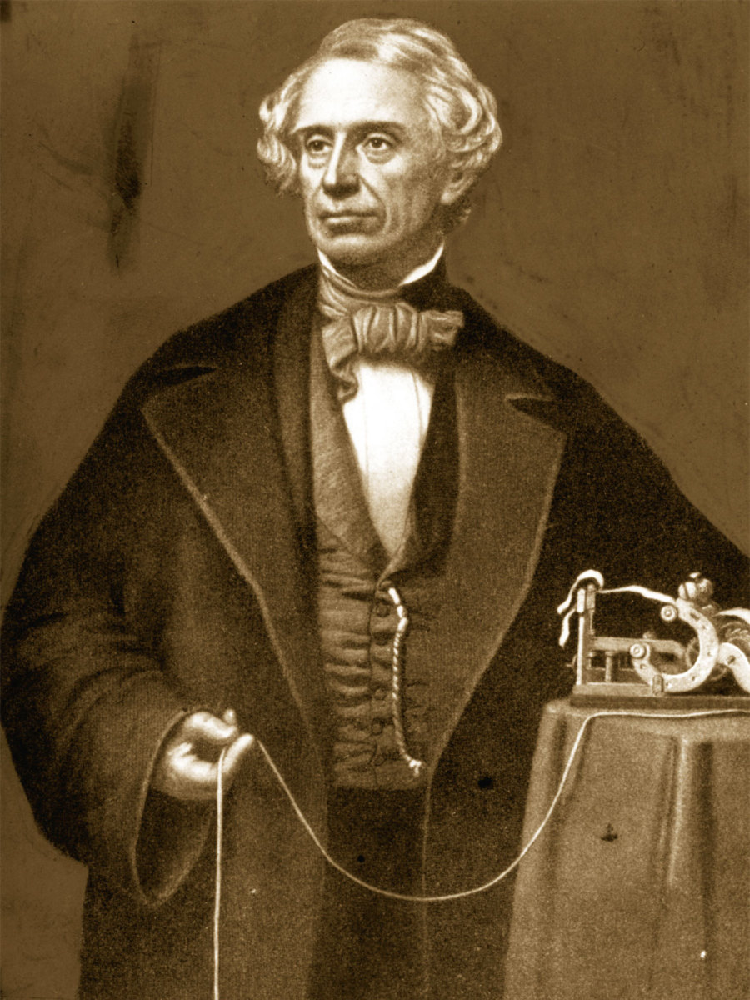
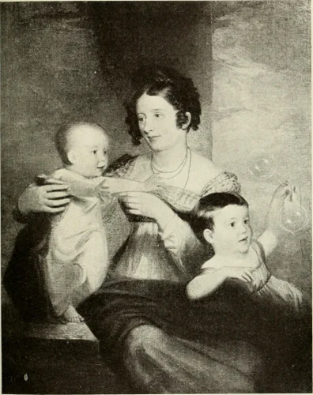
Enquanto pintava em Washington, Morse recebe a notícia da morte de sua esposa por carta — dias após o falecimento. A lentidão da comunicação o devastou. Jurou criar algo mais rápido.
No navio Sully, voltando da Europa, Morse conhece Charles Thomas Jackson. Durante a viagem, concebe os princípios básicos do telégrafo elétrico.
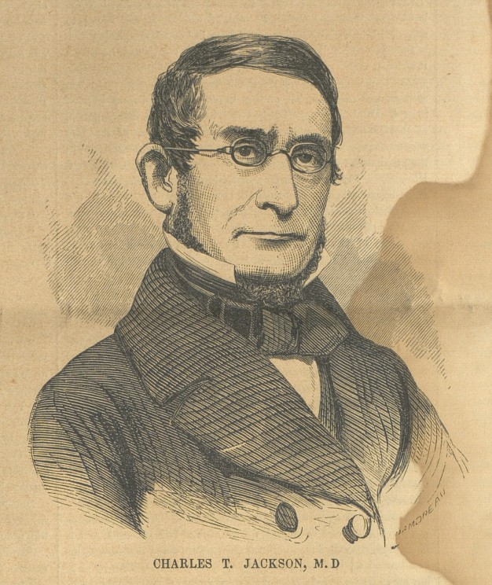
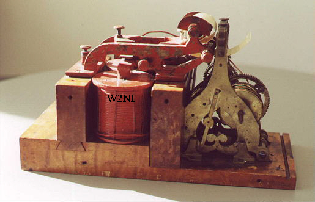
Com a ajuda de Alfred Vail, Morse constrói o primeiro telégrafo funcional. Vail contribui decisivamente para o refinamento do código, criando as sequências que usamos até hoje.
Em 24 de maio, Morse transmite a primeira mensagem oficial pelo telégrafo, do Capitólio em Washington até Baltimore — 61 km percorridos em segundos.
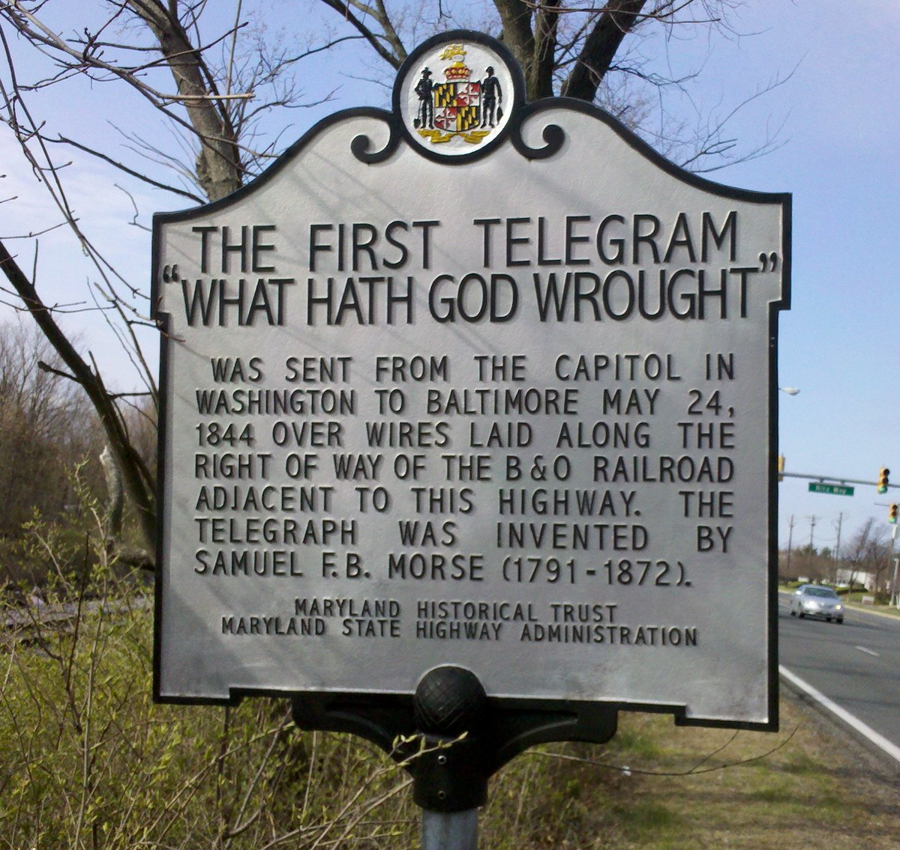
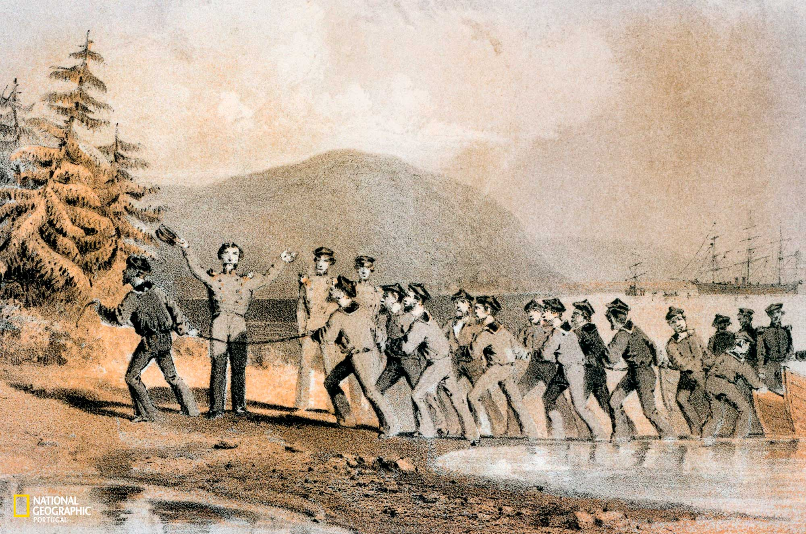
O primeiro cabo telegráfico transatlântico é instalado, conectando América do Norte e Europa. O Código Morse passa a cruzar oceanos, encolhendo o mundo de forma sem precedentes.
A Conferência Internacional de Radiotelegrafia adota ··· ––– ··· como sinal universal de socorro. O SOS salvaria milhares de vidas, incluindo sobreviventes do Titanic em 1912.
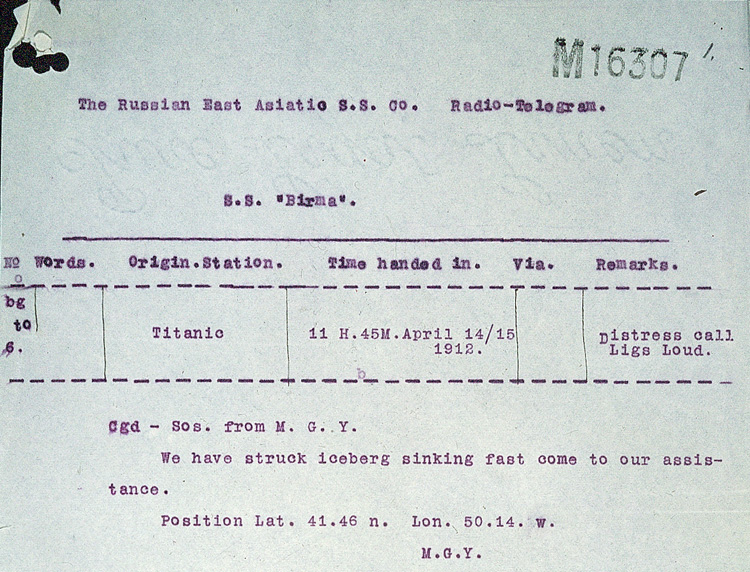
Embora substituído em comunicações profissionais, o Código Morse permanece em uso por radioamadores, forças militares e em emergências. É patrimônio cultural e técnico da humanidade.
Instituto de Ciências Matemáticas e de Computação
Universidade de São Paulo — São Carlos
Este site foi desenvolvido como projeto acadêmico do curso de Bacharelado em Sistemas de Informação do ICMC-USP, com o objetivo de apresentar de forma interativa a história, o funcionamento e as aplicações do Código Morse — um dos sistemas de comunicação mais importantes da história humana.
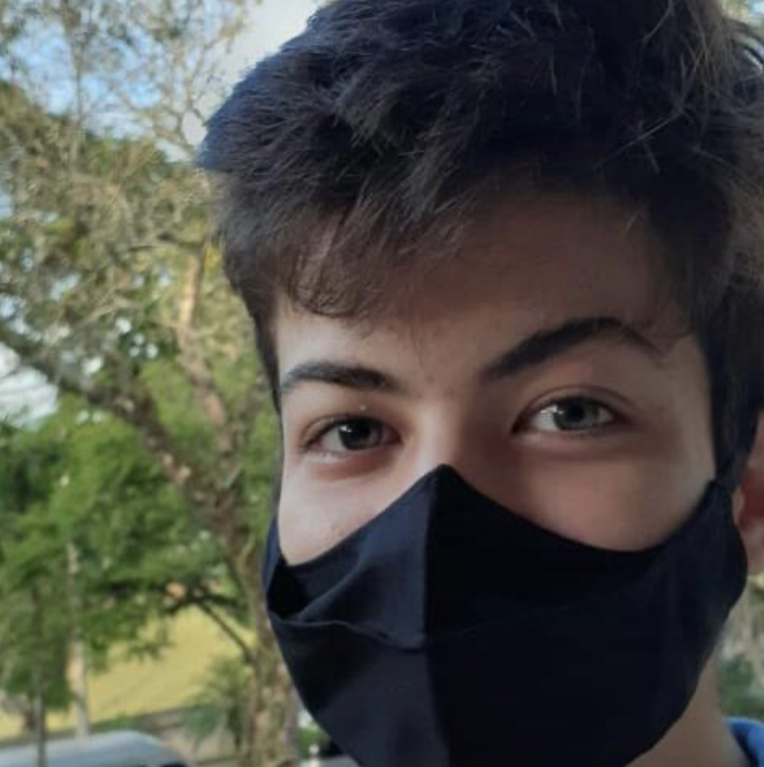
Orientado por: Prof. Cláudio Fabiano Motta Toledo